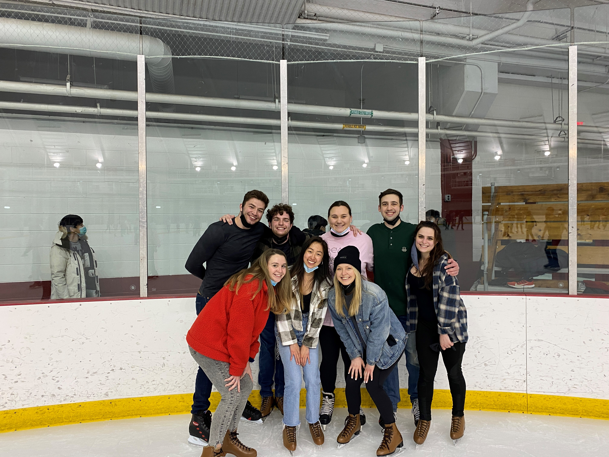
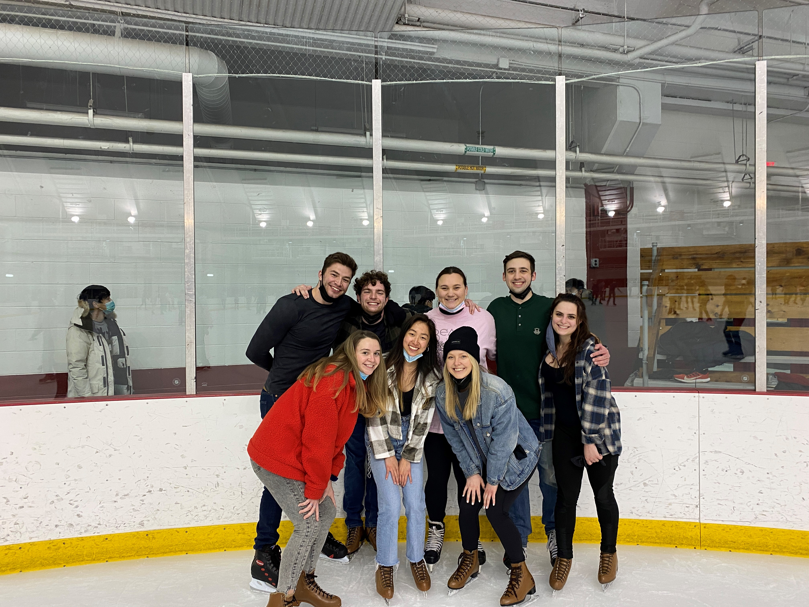

Engineering in the News!
This section is to give some interesting articles in civil engineering. Enjoy reading through these
articles as I thought they were interesting. Many of the authors or websites include current standards in the
civil engineering world or new ideas that are to come.
Student Skate night (2/26/2022)

Friends from college
Student skate night was a blast! Us tired students, in the midst of midterms, took a break from
studying to spend some quality time together and make unforgettable college memories. I am a former hockey player, so skating
with friends was an enjoyable experience. Now that the fun is over, it's time to hit the books and prepare for the next round of midterms.
A break from class (1/29/2022)

Sibling's Weekend 2022
Every year, UW-Madison gives us a 1 month long break between fall and spring semester. This year I took this time off as an
opportunity to visit my siblings, who live in Colorado, and get a breath of fresh air. We skied Vail and Keystone and enjoyed each others
company alongside the beautiful scenery. It was a nice break from class and allowed to me to connect back with nature and rediscover by
passion for the outdoors.
Student Skate night (2/26/2022)

Friends from college
Student skate night was a blast! Us tired students, in the midst of midterms, took a break from studying to spend some quality time together and make unforgettable college memories. I am a former hockey player, so skating with friends was an enjoyable experience. Now that the fun is over, it's time to hit the books and prepare for the next round of midterms.
A break from class (1/29/2022)
Sibling's Weekend 2022
Every year, UW-Madison gives us a 1 month long break between fall and spring semester. This year I took this time off as an opportunity to visit my siblings, who live in Colorado, and get a breath of fresh air. We skied Vail and Keystone and enjoyed each others company alongside the beautiful scenery. It was a nice break from class and allowed to me to connect back with nature and rediscover by passion for the outdoors.